1. Lập trình phần mềm Android theo kiểu Kéo-Thả (Drag and Drop) với MIT App Inventor 2.
MIT App Inventor dành cho Android là một ứng dụng web nguồn mở ban đầu được cung cấp bởi Google và hiện tại được duy trì bởi Viện Công nghệ Massachusetts (MIT). Nền tảng cho phép nhà lập trình tạo ra các ứng dụng phần mềm cho hệ điều hành Android (OS). Bằng cách sử dụng giao diện đồ họa, nền tảng cho phép người dùng kéo và thả các khối mã (blocks) để tạo ra các ứng dụng có thể chạy trên thiết bị Android. Đến thời điểm hiện tại 07/2017, phiên bản iOS của nền tảng này đã bắt đầu được đưa vào thử nghiệm bởi Thunkable, là một trong các nhà cung cấp ứng dụng web cho ngôn ngữ này.
Mục tiêu cốt lõi của MIT App Inventor là giúp đỡ những người chưa có kiến thức về ngôn ngữ lập trình từ trước có thể tạo ra những ứng dụng có ích trên hệ điều hành Android. Phiên bản mới nhất là MIT App Inventor 2.
Ngày nay, MIT đã hoàn thiện App Inventor và nó được chia sẻ ngay trên tài khoản Google. Các lập trình viên mới bắt đầu hoặc bất kỳ ai muốn tạo ra ứng dụng Android chỉ cần vào địa chỉ web của MIT, nhập thông tin tài khoản Google, và từ những mảnh ghép nhỏ, xây dựng những ý tưởng của mình. Bạn là người mới bắt đầu hoặc chưa biết gì hết về App Inventor? MIT có sẵn một loạt các hướng dẫn cụ thể cho bạn làm quen với chương trình.
Để sử dụng được App Inventor, các bạn truy cập vào địa chỉ http://ai2.appinventor.mit.edu . Sau đó tiến hành đăng nhập bằng tài khoản Google của bạn để mở trang quản lí các project.
- Giao diện quản lý project

- Giao diện thiết kế (Design)
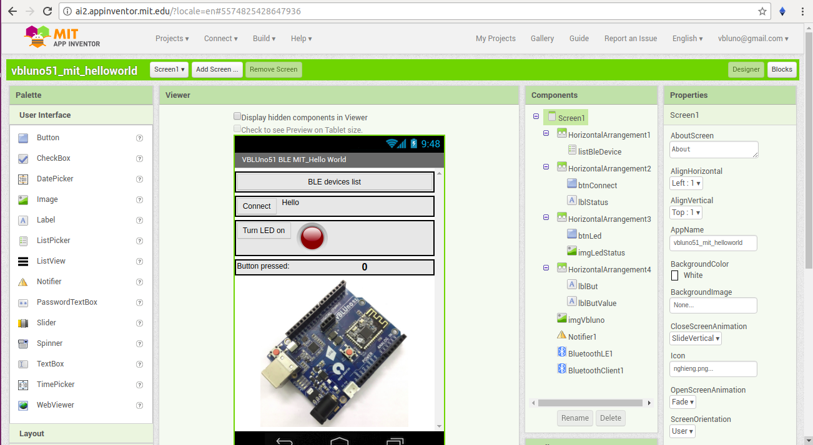
- Giao diện lập trình (Blocks)
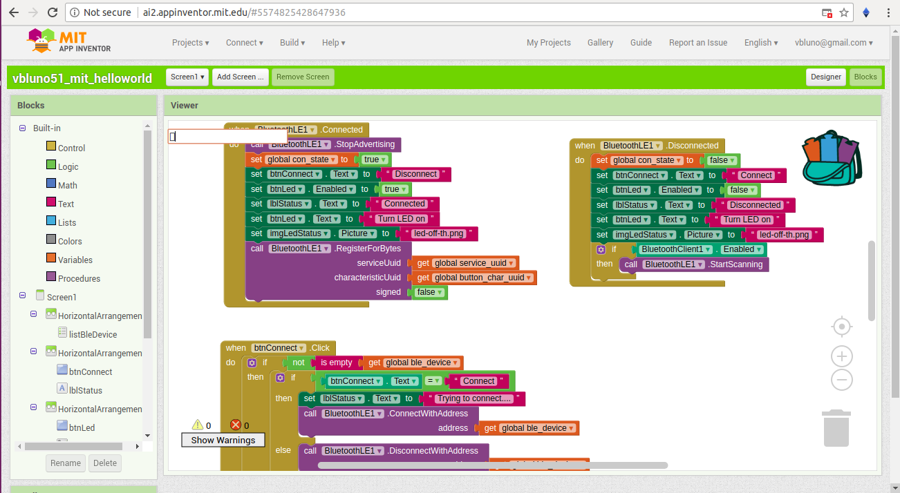
Nói chung tất cả rất đơn giản là các thao tác kéo và thả, bao gồm cả phần thiết kế giao diện và viết code. Tham khảo một số bài viết giới thiệu và hướng dẫn sử dụng ứng dụng MIT App Inventor
2. Xây dựng ứng dụng điều khiển/giám sát thiết bị qua truyền thông BLE.
Phần này trình bày các bước xây dựng một ứng dụng chạy trên Android OS để điều khiển và giám sát thiết bị thông qua giao tiếp truyền thông không dây Bluetooth Low Energy (BLE).
2.1. Tổng quan
-
Phần mềm:
- Chạy trên các điện thoại sử dụng hệ điều hành Android OS, với chức năng Bật / Tắt đèn led và giám sát số lần nhấn Push Button trên bo mạch VBLUno51. - Được viết bằng MIT App Inventor 2 theo cách lập trình kéo - thả (Drag & drop). -
Thiết bị điều khiển:
- Sử dụng bo mạch VBLUno51 của VNG, hỗ trợ giao tiếp BLE. - Firmware: Sử dụng mã nguồn cho VBLUno51 **GẦN GIỐNG** trong bài viết [ Tutorial: Điều khiển và Giám sát một thiết bị bằng Smartphone qua BLE với bo mạch VBLUno51](https://vngiotlab.github.io/vbluno/vi/mydoc_arduino_tut6_vi.html)Chỉ khác tại dòng 85, giá trị để bật sáng Led là
0x30thay vì0x00. Lý do rất đơn giản: BluetoothLE extension của MIT AI2 bản hiện tại chưa hoàn thiện, còn xảy ra lỗi khi sử dụng phương thức WriteBytes. Để khắc phục điều đó, ví dụ của chúng ta sử dụng phương thức WriteStrings.[Firmware sử dụng cho VBLUNO51 trong ví dụ này](https://github.com/VNGIoTLab/vbluno_ble_led_button_appinventor/blob/master/firmware_vbluno51/firmware_vbluno51.ino) - Chức năng cụ thể: + Điều khiển: Cho phép sử dụng ứng dụng mobile để điều khiển Bật / Tắt led có sẵn trên mạch. + Giám sát: Khi người dùng nhấn Push Button trên mạch, giá trị giám sát tăng dần và hiển thị trên ứng dụng mobile.
2.2. Các bước cụ thể
Bước 1: Tạo project
Sau khi đăng nhập, tại cửa sổ chính (My Project), bạn chọn Start new project , sau đó đặt trên cho project bạn muốn tạo.
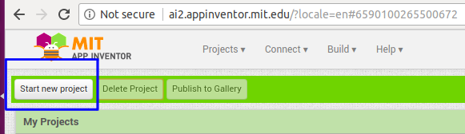

Bước 2: Thiết kế giao diện
Cửa sổ thiết kế gồm 4 khung chức năng chính như hình dưới đây
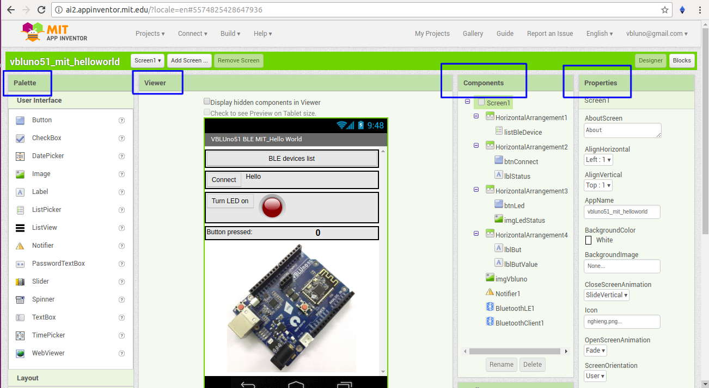
-
Đầu tiên, một ứng dụng có thể có nhiều cửa sổ giao diện, trong MIT AI2 gọi là các Screen.
-
Palette: Chứa các thành phần có thể đặt lên trên Screen như: Button, Label, Image, Listview, Video player, …. Đến các thanh phần chức năng không nhìn thấy trên Screen như: BLE extension, Notifier, các sensors, …. -
Viewer: Hiển thị giao diện screen. Kéo thả các thành phần từ khung Palette sang đây để thiết kế giao diện cho phần mềm của bạn. -
Components: Sơ đồ cây thể hiện cấu trúc các thành phần đã được bố trí trên Screen. -
Properties: Hiển thị thuộc tính của component tương ứng được chọn.
Ngoài ra còn khung
Mediachứa các file media bạn tải lên để sử dụng trong chương trình như: Ảnh icon, ảnh nền, … -
-
Chương trình minh họa trong bài viết được thiết kế như hình bên dưới. Bao gồm các thành phần nhìn thấy trên Screen và các thành phần chức năng không nhìn thấy trên Screen (non-visible) là:
-
Notifier1: Hiển thị các câu thông báo đến người dùng. -
BluetoothLE1: Đây là extension cho phép truyền thông qua giao tiếp Bluetooth Low Energy.
Tải BluetoothLE.aix về máy tính
Để sử dụng extesion này trong project của bạn, vào
Palette -> Extension -> Import extension -> Chọn file BluetoothLE.aix mới tải vXem tài liệu mô tả để biết chi tiết
BluetoothClient1: Để giao tiếp với VBLUno51 qua BLE chúng ta đã sử dụng BluetoothLE extension. Tuy nhiên, do extension này chưa có thuộc tính để kiểm tra việc Điện thoại đã bật Bluetooth hay chưa nên ta sử dụng component này để giải quyết vấn đề đó.
-
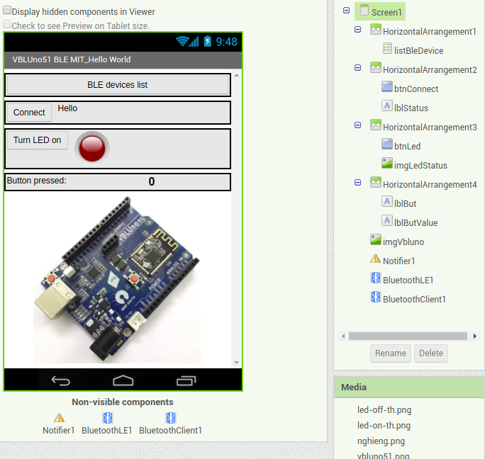
Bước 3: Lập trình chức năng
Để di chuyển qua lại giữa cửa sổ thiết kế và tạo code, nhấp chọn các nút Design, Blocks ở góc phải.
-
Trong MIT AI2, code chính là các
Blocks, việc của chúng ta là kéo thả các blocks này sang khung Viewer và kết nối chúng theo chức năng mong muốn. -
Blocks gồm 2 nhóm chính:
- Các block chức năng cơ bản của một chương trình như: điều khiển luồng, logic, toán học, ký tự, biến, …

* Các block chức năng theo từng component trong ứng dụng: Mỗi component của ứng dụng đều có các block chức năng tương ứng.

Nhóm này gồm 3 kiểu chính:
Thuộc tính (Properties):
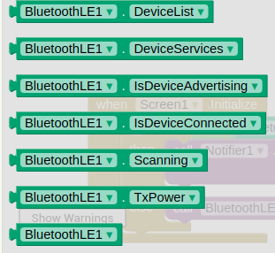
Phương thức (Methods):

Sự kiện (Events):
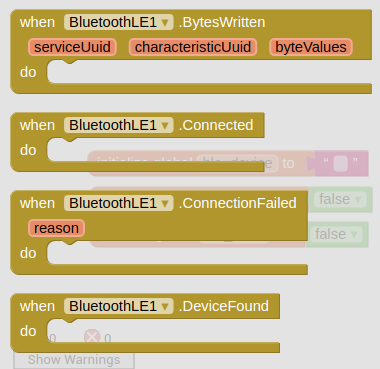
Các khối code của chương trình ví dụ
* Khởi tạo 6 biến toàn cục: Các uuid của giao diện BLE, các biến điều khiển trạng thái.

* Hành động khi khởi chạy Screen: Kiểm tra đã bật Bluetooth hay chưa, nếu đã bật thì bắt đầu quét các thiết bị BLE xung quanh.

* Hành động khi phát hiện thiết bị BLE: Thêm và danh sách của ListPicker

* Hành động sau khi user chọn một thiết bị từ ListPicker: Lấy giá trị địa chỉ của thiết bị được chọn và gán cho biến `ble_device`.

* Hành động khi phần mềm đã kết nối với VBLUno51 qua BLE: Dừng quét, đặt trạng thái kết nối, thay đổi giao diện, cho phép VBLUno51 notify dữ liệu lên phần mềm qua button characteristic.

* Hành động khi ngắt kết nối: đặt trạng thái, thay đổi giao diện, tiếp tục quét các thiết bị BLE xung quanh.
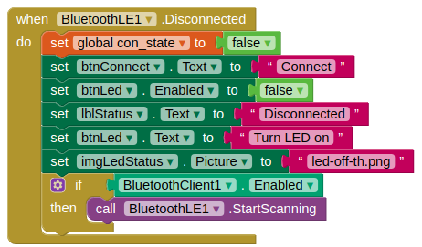
* Hành động khi nhấn nút Connect: Thực hiện kết nối / ngắt kết nối đến thiết bị BLE đã chọn từ ListPicker.
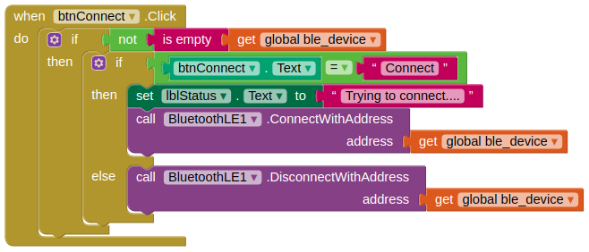
* Hành động khi nhấn nút bật/tắt đèn led: Tùy theo trạng thái Led hiện tại mà truyền lệnh bật hoặc tắt led, thay đổi các giao diện tương ứng.

* Hành động khi phần mềm nhận được dữ liệu giám sát Button do VBLUno51 gửi lên: Xử lý và hiển thị lên Screen.
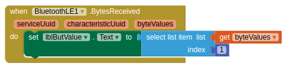
- Bạn có thể tải mã nguồn hoàn chỉnh tại vbluno51_mit_helloworld.aia. Sau đó, import projects tại MIT App Inventor2 để sử dụng.
Bước 4: Biên dịch và thử nghiệm
-
Để biên dịch và thực thi chương trình viết trên MIT App Inventor 2 có hai cách:
-
Cách 1: Sử dụng phần mềm MIT Companion. Với cách này, bạn cần cài đặt phần mềm MIT Companion trên điện thoại của bạn. Sau đó, kết nối với project của bạn để tự động download về và chạy bên trong phần mềm MIT Companion. Điều này gây ra nhiều sự bất tiện và phụ thuộc.
-
Cách 2: Biên dịch ra file apk và cài đặt, bao gồm tùy chọn download file apk về máy tính sau đó sao chép sang điện thoại để cách đặt hoặc biên dịch và tải online thông qua mã QR code.
-
Ở ví dụ này mình chọn Cách 2.
Để thực hiện, bạn chọn Build -> App (provide QR code for .apk)
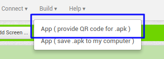
Sau khi biên dịch xong sẽ xuất hiện một mã QR code, bạn sử dụng phần mềm quét QR code trên điện thoại để tải file apk về và cài đặt.

- Bạn có thể tải file apk thực thi của ứng dụng minh họa này tại vbluno51_mit_helloworld.apk.
2.3. Kết quả
Giao diện chương trình

Nhấp chọn nút BLE devices list để lựa chọn bo mạch VBLUno51 cần kết nối.
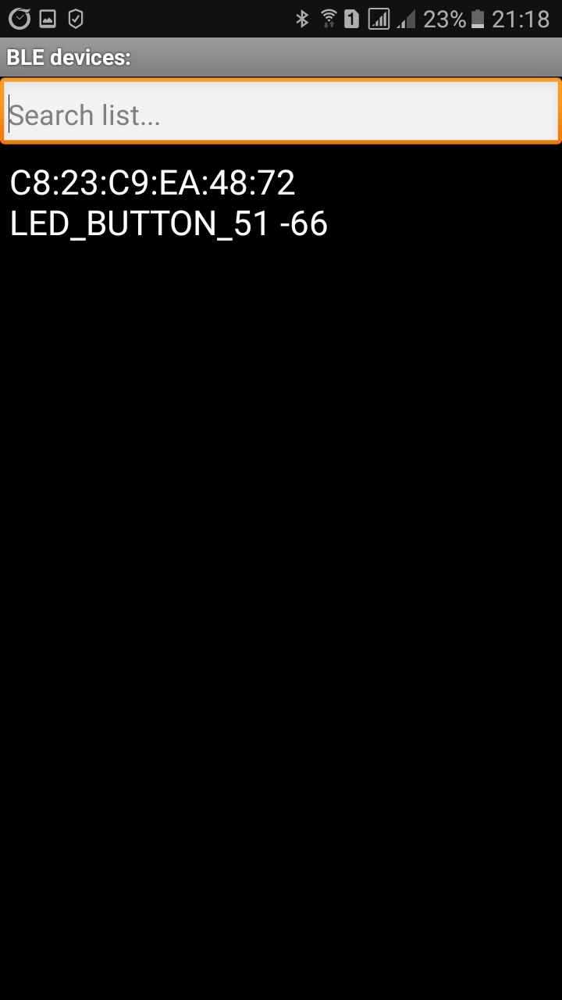
Nhấn Connect để kết nối thiết bị, sau khi kết nối bạn có thể bật / tắt led và giám sát giá trị mỗi lần nhấn Push button trên bo mạch VBLUno51.

Có thể thấy, việc sử dụng MIT App Inventor 2 để lập trình ứng dụng mobile trên Android OS khá đơn giản, dễ dàng thực hiện được với những bạn không chuyên. MIT App Inventor2 đang ngày càng hoàn thiện hơn nữa. Mong rằng các bạn có thể tạo cho mình những phần mềm hữu ích cho học tập, giải trí và cuộc sống.